LCS · 11 October 2026
Vienna's main room
Concept A is approved: a social broadcast den with collected furniture, a shared listening corner and a fuller record library. The Concept A art pass is complete: a personal broadcast den with collected furniture, a dressed listening corner, full media storage and photographic wall groups. Native room views and verification are below.
Sol implementation · Astra visual review
Room concepts — more furniture, more life
Two opposing views per direction. Larger furniture groups and clustered activity give the room a busier, more personal character. These are generated concepts; the existing room still governs architecture and exact placement.
A — Social broadcast den · approved
A salvaged coffee table, mismatched lounge chair and long low record storage make a shared listening corner. Sleeves, books, coffee mugs, notes and textiles gather around that activity.
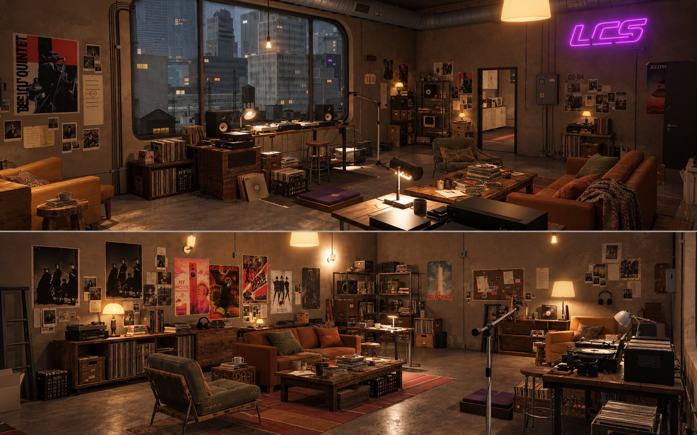
Generated room direction A · open the image for full size
B — Working record archive
A record browsing cabinet, sorting table, trolley and fuller timber/steel storage make the collection visibly active. More cartons and media groups occupy the perimeter and work surfaces.
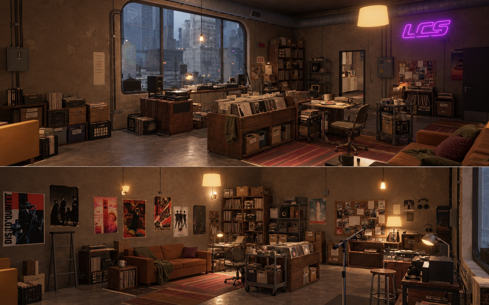
Generated room direction B · open the image for full size
Approved direction: A’s conversation group with B’s fuller perimeter storage and one compact trolley. Keep one clear central arrangement and usable routes to the doors and deck.
Astra reviewed both sheets. Furniture will be distributed by room zones and available floor/wall pockets; clutter will occupy compatible carrying surfaces with load and clearance checks. Stable identities, owner locks and reshuffling after layout changes remain requirements. Generated perspective, rugs, lamp positions and tiny artwork are illustrative; they do not change the room contract.
Furniture and distribution planGeneration prompts
Approved A — completed room art pass
The social broadcast den now has final art for every physical prop used in the room. Uneven book runs, cassette stock, activity papers and finished utility models fill the remaining gaps. Photo-led groups beside the window and neon add the personal wall mass from A.
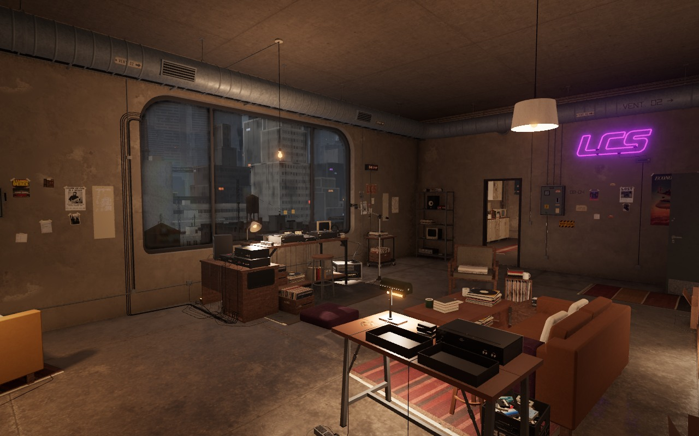
Native room · window / broadcast corner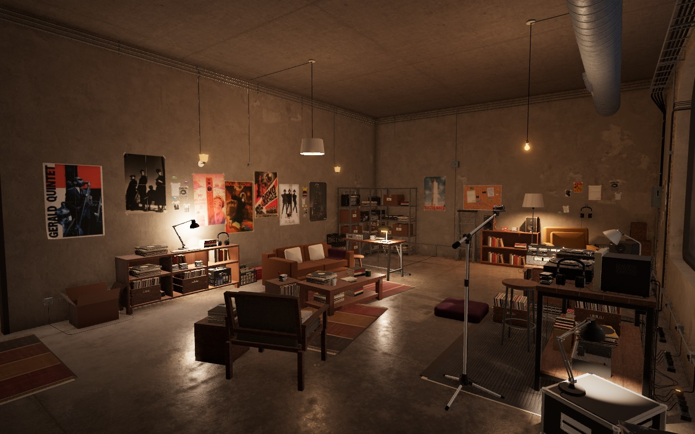
Native room · conversation group / library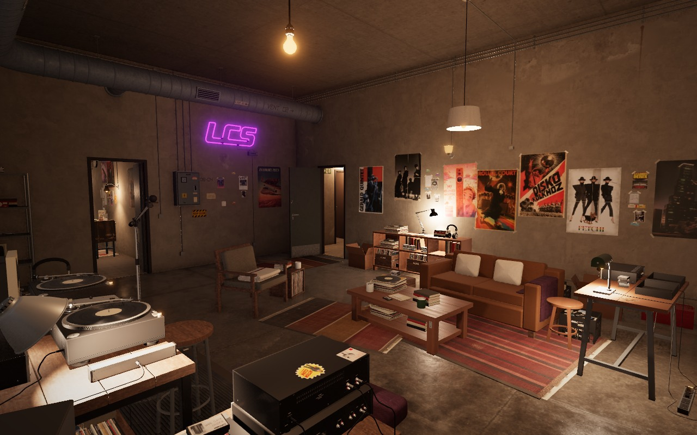
Native room · broadcast view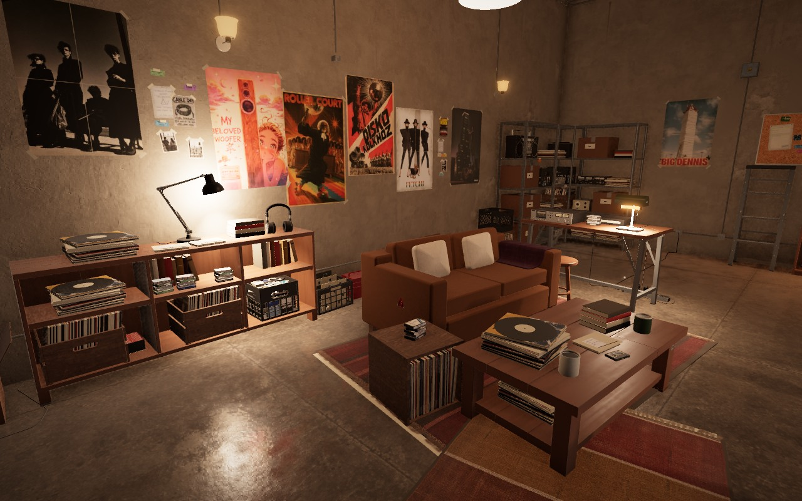
Native room · sofa and library detailSol6.1 ultra built the assets; Astra ultra reviewed the actual native room against A. Final inventory follows room zones, compatible carrying surfaces and wall support recipes; identities, owner locks and reflow remain intact. Both sofa approaches and cable access are clear. Optimized new art fits the existing cover, word and wear atlas dimensions, with previous artwork and files retained. Established architecture and catalog proportions remain authoritative.
Room verificationPhysical asset coverageInspect the assetsOpen live apartment
Approved A — sofa, lighting and portable audio finals
Two sewn oatmeal pillows and a plum throw dress the existing sofa through its real carrying surfaces. Constructed lamps and four analog portable players add personal use around the room.
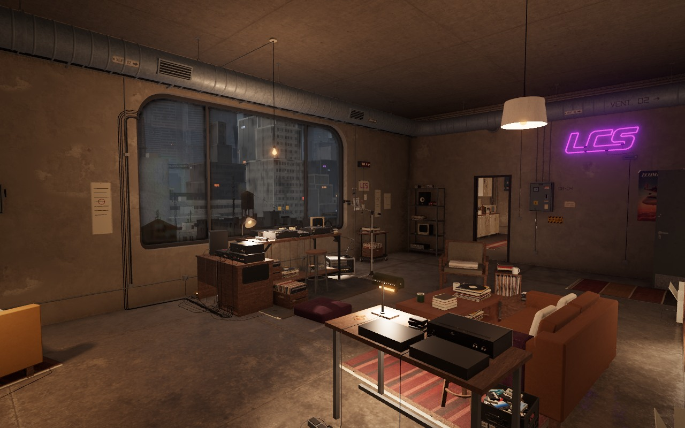
Native room · window / broadcast corner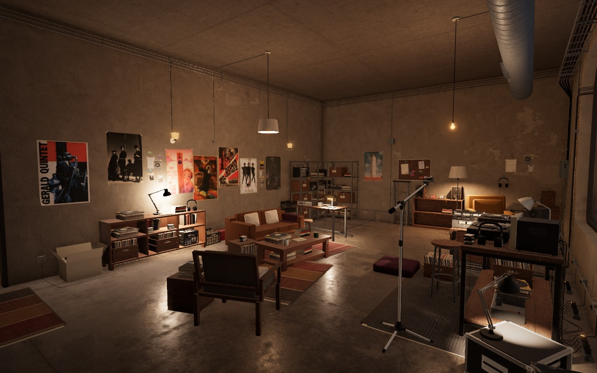
Native room · conversation group / libraryNative room · broadcast view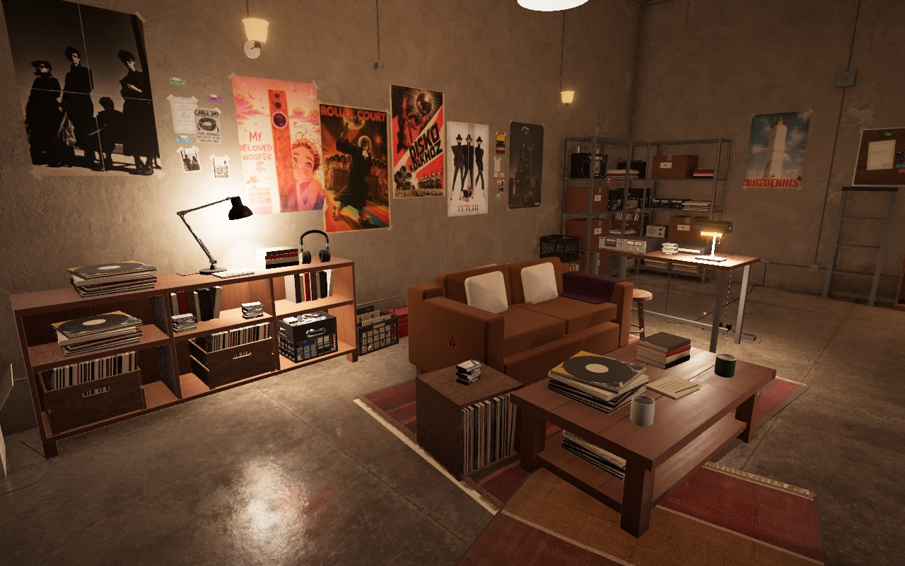
Native room · sofa detail
Eleven assets pass all 15 exporter checks and root/Astra native review. Sofa textiles follow procedural support recipes and remain clear of the stool and seating approaches. Small paper, cork and functional word rasters fit existing atlas dimensions; previous records and files are retained. Full physical finalization and the last distribution review continue.
Finals verificationInspect the assetsOpen live apartment
Approved A — furniture, cloth and audio finals
The salvaged table, open timber chair, record credenza and wheeled trolley now have final construction and materials. Rounded floor upholstery and a sewn blanket soften the listening area. Two-way speakers and the large analog boombox have finished drivers, grilles and controls.
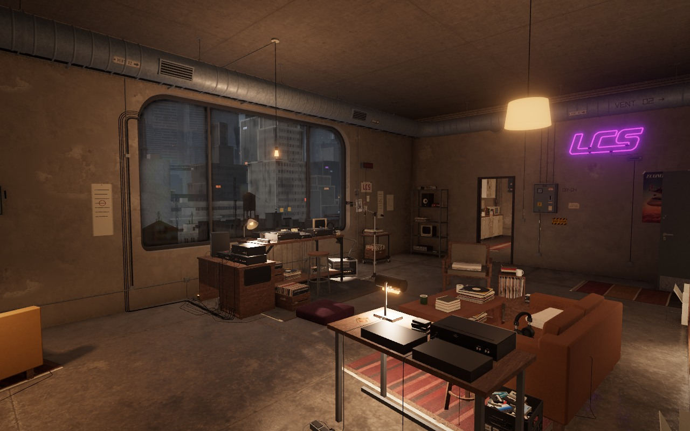
Native room · window / broadcast corner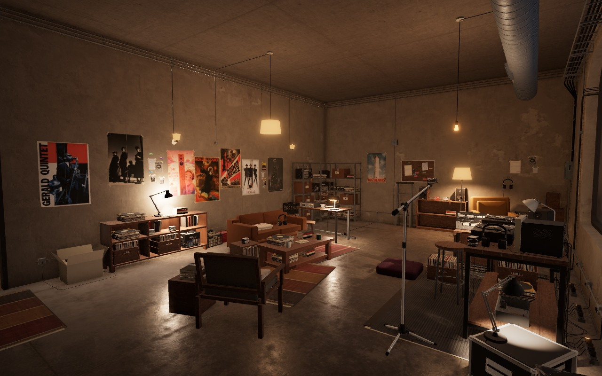
Native room · conversation group / library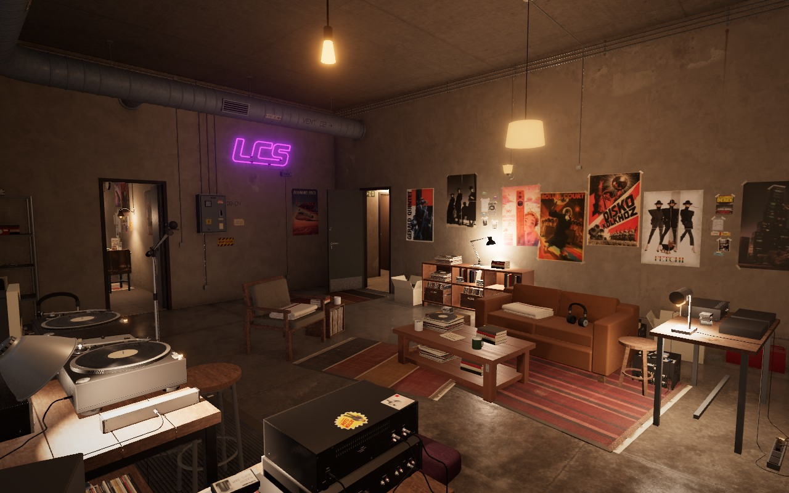
Native room · view from the DJ deck
Eight assets pass all 15 exporter checks. Root and Astra reviewed the actual room and asset views. One 256px chair swatch and three small wood wear regions fit the existing atlases, preserving previous artwork and texture memory allocation. Layout, other catalog entries and prior downloadable files are preserved. The full room pass continues with lamps, sofa textiles and remaining physical blockouts.
Finals verificationInspect the assets
Approved A — procedural layout checkpoint
A coffee table and low guest chair make a reachable conversation group. A long record credenza, compact trolley, surface clutter and three irregular paper groups give the room more activity. These images show the actual native room with initial furniture blockouts.
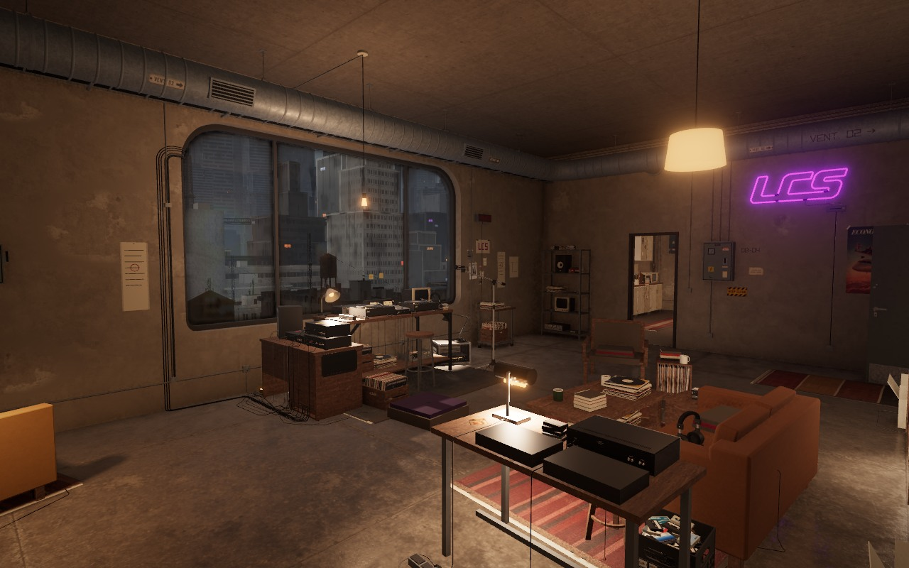
Native room · window and DJ corner · 19:00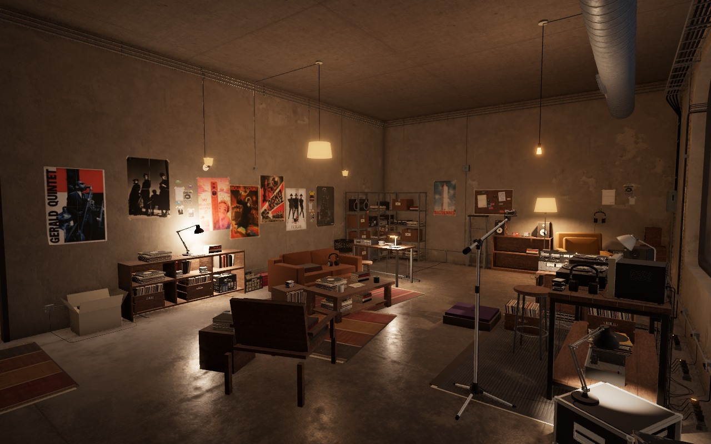
Native room · conversation group and libraryView from the broadcast work area
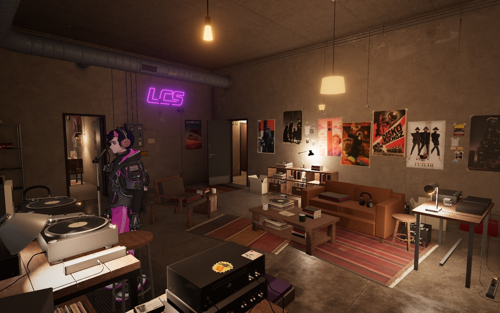
Native room · broadcast-side view31 additions use room zones and compatible carrying surfaces. The table is 0.4 m from the sofa, door and DJ routes remain usable, and all 623 placements belonging to other rooms are preserved. All 621 room tests, 31 server tests and workspace typechecks pass. Astra accepted this layout and paper checkpoint. The furniture and textile material pass is underway.
Layout verificationOpen live apartment
Pass 2 — a working record library
Twelve groups of records, tapes, books and cartons fill useful shelf pockets. Mixed volumes and gaps give the storage wall more weight without moving the furniture.
 Previous checkpoint — sparse shelf volumes
Previous checkpoint — sparse shelf volumes Stock pass — deployed native room, 19:00
Stock pass — deployed native room, 19:00Opposing views of the stock pass
 Window / DJ station
Window / DJ station DJ station / listening corner
DJ station / listening cornerPlacement follows suitable shelf surfaces, load limits and available space. Stock keeps its identity through furniture changes, waits when no shelf fits and resumes when one is available. All 760 saved owner placements are preserved, along with the preview’s four derived loot posters. No new textures. Sol implemented the rules; Astra accepted the room views. Lamp and character states differ between captures.
Stock verificationLive asset check